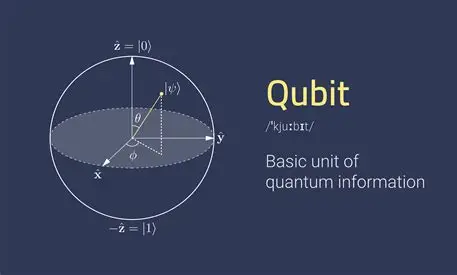

Principes de l'informatique Quantique
La physique quantique
Pour comprendre le fonctionnement de l'infomatique quantique, il faut d'abord comprendre le principe de " quantique ". Pour expliquer ce principe, prennons l'exemple de la lumiere. La lumiere est une particule. En effet, elle se comporte comme telle, d'ou le principe de photon. Une petite particule chargee en energie. Et pourtant, la lumiere est une onde. Une pertubation electromagnetique, qui a une longueur d'onde definissant sa " couleur " et son energie. Bien que contradictoire, ces 2 phrases sont vraies. Savoir si la lumiere est une particule ou une onde est un debat long qui s'acheve avec la conclusion que la lumiere est les 2 et que tout depend de comment on l'observe. Le principe de quelque chose de quantique, c'est ca. Quelque chose dont l'etat est variable en dehors du temps. (exemple : le chat de Shrodinger)

Ces propriétés permettent de traiter certaines classes de problèmes beaucoup plus efficacement que les ordinateurs classiques.
Principse de l'informatique quantique :
Comment retranscrit t'on alors ce principe a l'informatique ? On donne la possibilites a chaque bit, non plus la possibilite d'etre soit un 0 ou soit un 1, mais celle d'etre les deux en meme temps ou l'etat de 0 et de 1 se superpose. Cela implique un changement dans la maniere de stocker les 0 ou 1. Dans un ordinateur classique, on utilise des ransistor pour faire passer des particules (atomes) de 0 a 1 et inversement en les chargeant/dechargeant electriquement. Mais se baser sur un systeme electrique n'est as envisageable (au moins a l'heure actuelle). Soit la l'atome est charge, soit il ne l'est pas. Comme dis plus haut, un objet quantique n'as, pour notre consideration, pas qu'un seul etat a la fois. Un ordinateur quantique permet de calculer le resultat d'une operation pour les differents etats d'une particule observee en meme temps et, par calcul de probabilite, de determiner le resultat le plus " probable ". Pur ce faire, il s'appuie sur les principes d'intrication (lien entre les etat de deux particule ayant interagies) et de superposition des etats. Il nous faut donc un systeme different appelle qubit (bit quantique).
Definitions clées :
- Qubit :
- Unité de base de l'informatique quantique pouvant être dans plusieurs états simultanément.
- Superposition :
- Principe selon lequel un qubit peut exister dans plusieurs états à la fois.
- Intrication :
- Phénomène quantique où deux qubits sont liés de manière à ce que l'état de l'un dépende instantanément de l'état de l'autre.
- Mesure quantique :
- Processus qui permet de déterminer l'état d'un qubit.